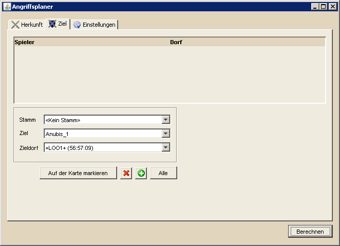

Angriffsplaner - Ziel |
||
|  | ||
Die Auswahl der Angriffsziele ist ähnlich der Herkunft zu benutzen. Natürlich muss man hier den Spieler und die Dörfer angeben, die angegriffen werden sollen. Zusätzlich besteht die Möglichkeit, die Stammesliste zu filtern, um so schneller den gewünschten Zielstamm zu finden. Hierfür gibt man unter 'Filter' lediglich den Text ein, den der Stammesname oder Stammestag enthalten soll und die Liste der Stämme wird entsprechend angepasst. Für stammlose Spieler besteht unter der Stammauswahl die Möglichkeit, <Kein Stamm> anzuwählen, woraufhin die Zielauswahl alle stammlosen Spieler enthält. Die Auswahl des Kontinents dient dazu, die Anzahl der angreifbaren Dörfer des gewählten Spielers einzuschränken. Bevor man Dörfer nun als Ziele hinzufügt kann man noch einstellen, ob die hinzugefügten Dörfer Ziele für Fakes sein sollen ("Als Fake einfügen") und wieviele Angriffe auf diese Dörfer maximal geplant werden sollen ("Max. Angriffe pro Dorf"). Beide Werte kann man nachträglich über entsprechende Buttons im Menü verändern. Die Beschreibung des Menüs gibt es auf der Hauptseite des Angriffsplaners. Ist man mit der Dorfauswahl und den Einstellungen zufrieden kann man gewünschte Einträge in der Liste "Dörfer" markieren und per Drag&Drop in die Tabelle ziehen. Möchte man alle Dörfer angreifen markiert man alle Einträge per STRG+A und zieht sie dann wie beschrieben in die Zieltabelle. |
||